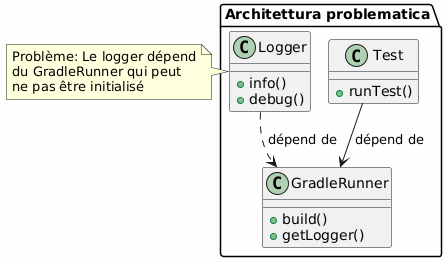
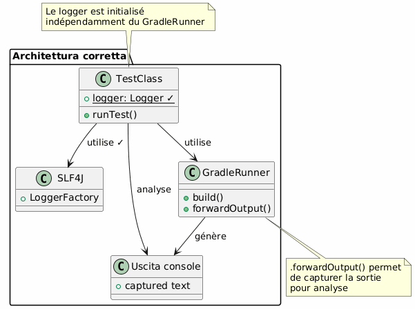
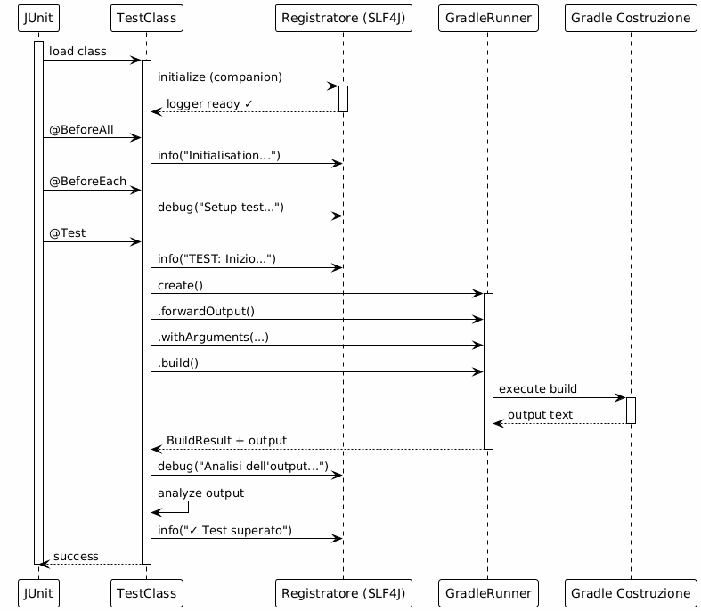
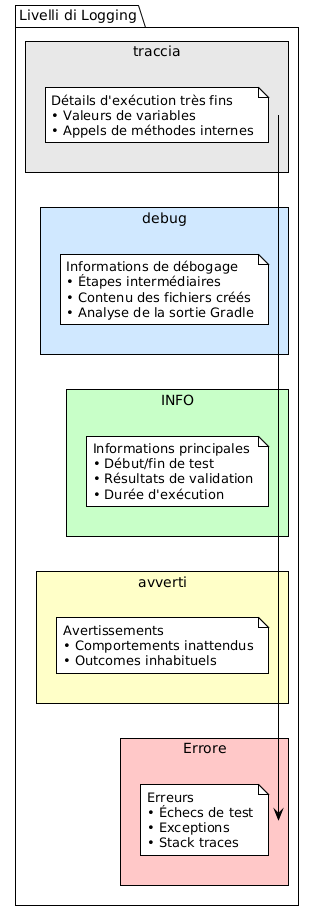

Logging efficace nei test funzionali dei plugin Gradle
Publié le 07 November 2025
Introduzione
Durante lo sviluppo di un plugin Gradle, i test funzionali sono essenziali per validare il comportamento del plugin in un ambiente Gradle reale. Tuttavia, sorge rapidamente una questione cruciale:come impostare un sistema di logging efficace senza creare dipendenze problematiche con il GradleRunner?
In questo articolo, esploreremo:
-
La problematica del logging nei test funzionali di Gradle
-
L’architettura di una soluzione robusta con SLF4J e Logback
-
L’implementazione completa con esempi concreti
-
Le buone pratiche e i tranelli da evitare
Il Problema : Dipendenza da GradleRunner
Contesto dello sviluppo del plugin
Quando si sviluppa un plugin Gradle, si usa generalmente il`GradleRunner`del Gradle TestKit per eseguire build di test:
@Test
fun `test my plugin`() {
val result = GradleRunner.create()
.withProjectDir(projectDir)
.withArguments("myTask")
.build()
// Comment logger efficacement ici ?
}Il dilemma del logging
Il problema principale è il seguente:il logging non deve dipendere da un oggetto del quale non si è sicuri dell’inizializzazione.

Le false buone idee
|
Non farlo : |
La Soluzione : Logger Indipendente
Architettura Consigliata
La soluzione consiste nell’utilizzare un loggercompletamente indipendente du GradleRunner, inizializzato a livello della classe di test.

Flusso di esecuzione

Implementazione completa
Dipendenze Gradle
Aggiungi le dipendenze necessarie nel tuo`build.gradle.kts`:
dependencies {
// Pour les tests fonctionnels
testImplementation(gradleTestKit())
testImplementation("org.junit.jupiter:junit-jupiter:5.10.2")
// Pour le logging
testImplementation("org.slf4j:slf4j-api:2.0.17")
testRuntimeOnly("ch.qos.logback:logback-classic:1.4.14")
// Pour les assertions
testImplementation("org.assertj:assertj-core:3.27.6")
}
tasks.test {
useJUnitPlatform()
}Configurazione Logback
Crea il file`src/test/resources/logback-test.xml`:
<?xml version="1.0" encoding="UTF-8"?>
<configuration>
<!-- Appender console avec format lisible -->
<appender name="STDOUT" class="ch.qos.logback.core.ConsoleAppender">
<encoder>
<pattern>%d{HH:mm:ss.SSS} [%thread] %-5level %logger{36} - %msg%n</pattern>
</encoder>
</appender>
<!-- Appender fichier pour conservation -->
<appender name="FILE" class="ch.qos.logback.core.FileAppender">
<file>build/test-results/functional-tests.log</file>
<encoder>
<pattern>%d{yyyy-MM-dd HH:mm:ss.SSS} [%thread] %-5level %logger{50} - %msg%n</pattern>
</encoder>
</appender>
<!-- Logger pour vos tests -->
<logger name="com.cheroliv.bakery" level="DEBUG"/>
<!-- Réduire le bruit de Gradle -->
<logger name="org.gradle" level="WARN"/>
<!-- Configuration racine -->
<root level="INFO">
<appender-ref ref="STDOUT"/>
<appender-ref ref="FILE"/>
</root>
</configuration>Classe di Test Completa
package com.cheroliv.bakery
import org.gradle.testkit.runner.GradleRunner
import org.gradle.testkit.runner.TaskOutcome
import org.junit.jupiter.api.*
import org.junit.jupiter.api.TestInstance.Lifecycle.PER_CLASS
import org.junit.jupiter.api.io.TempDir
import org.slf4j.Logger
import org.slf4j.LoggerFactory
import java.io.File
import kotlin.test.assertEquals
import kotlin.test.assertTrue
@TestInstance(PER_CLASS)
class BakeryPluginFunctionalTest {
@field:TempDir
lateinit var projectDir: File
private val buildFile by lazy { projectDir.resolve("build.gradle.kts") }
private val settingsFile by lazy { projectDir.resolve("settings.gradle.kts") }
companion object {
// ✓ Logger indépendant, initialisé au chargement de la classe
private val logger: Logger = LoggerFactory.getLogger(
BakeryPluginFunctionalTest::class.java
)
@JvmStatic
@BeforeAll
fun globalSetup() {
logger.info("═".repeat(60))
logger.info("DÉMARRAGE DE LA SUITE DE TESTS FONCTIONNELS")
logger.info("═".repeat(60))
}
@JvmStatic
@AfterAll
fun globalTeardown() {
logger.info("═".repeat(60))
logger.info("FIN DE LA SUITE DE TESTS")
logger.info("═".repeat(60))
}
}
@BeforeEach
fun setup() {
logger.info("─".repeat(60))
logger.info("Préparation de l'environnement de test")
logger.debug("Répertoire de test: ${projectDir.absolutePath}")
settingsFile.writeText("""
rootProject.name = "test-bakery-project"
""".trimIndent())
logger.debug("✓ settings.gradle.kts créé")
}
@AfterEach
fun teardown(testInfo: TestInfo) {
logger.info("✓ Test terminé: ${testInfo.displayName}")
logger.info("─".repeat(60))
}
@Test
fun `plugin can be applied successfully`() {
logger.info("TEST: Application du plugin Bakery")
buildFile.writeText("""
plugins {
id("com.cheroliv.bakery")
}
""".trimIndent())
logger.debug("Fichier build.gradle.kts créé")
logger.debug("Lancement du build Gradle...")
val startTime = System.currentTimeMillis()
val result = GradleRunner.create()
.forwardOutput() // ← Important : capture la sortie
.withPluginClasspath()
.withArguments("tasks", "--group=bakery", "--stacktrace")
.withProjectDir(projectDir)
.build()
val duration = System.currentTimeMillis() - startTime
logger.info("Build terminé en ${duration}ms")
// Analyse de la sortie
logger.debug("Analyse de la sortie Gradle...")
val outputLines = result.output.lines()
logger.debug("Nombre de lignes capturées: ${outputLines.size}")
// Validation
val expectedTasks = listOf("bake", "printConfigPath", "printJBakeClasspath")
logger.info("Vérification des tâches attendues:")
expectedTasks.forEach { task ->
val found = result.output.contains(task)
logger.debug(" ${if (found) "✓" else "✗"} $task")
assertTrue(found, "Task '$task' should be available")
}
logger.info("✓ Plugin appliqué avec succès - ${expectedTasks.size} tâches trouvées")
}
@Test
fun `bake task executes and prints version`() {
logger.info("TEST: Exécution de la tâche 'bake'")
buildFile.writeText("""
plugins {
id("com.cheroliv.bakery")
}
""".trimIndent())
logger.debug("Exécution de 'gradle bake'...")
val result = GradleRunner.create()
.forwardOutput()
.withPluginClasspath()
.withArguments("bake", "--info") // --info pour plus de détails
.withProjectDir(projectDir)
.build()
// Extraction d'informations depuis la sortie
logger.debug("Recherche du message 'Baking site'...")
val hasBakingMessage = result.output.contains("Baking site with Bakery Plugin!")
logger.debug("Recherche de la version JBake...")
val hasVersionMessage = result.output.contains("Using JBake version:")
// Extraction de la version (si présente)
val versionRegex = Regex("Using JBake version: (.+)")
val versionMatch = versionRegex.find(result.output)
if (versionMatch != null) {
val version = versionMatch.groupValues[1]
logger.info("Version JBake détectée: $version")
}
// Validation
assertTrue(hasBakingMessage, "Message 'Baking site' attendu")
assertTrue(hasVersionMessage, "Message de version attendu")
assertEquals(TaskOutcome.SUCCESS, result.task(":bake")?.outcome)
logger.info("✓ Tâche 'bake' exécutée avec succès")
}
@Test
fun `analyze output with structured logging`() {
logger.info("TEST: Analyse structurée de la sortie")
buildFile.writeText("""
plugins {
id("com.cheroliv.bakery")
}
task("diagnostics") {
doLast {
println("[DIAG] Project: ${'$'}{project.name}")
println("[DIAG] Build dir: ${'$'}{project.buildDir}")
println("[DIAG] Plugin applied: true")
val config = configurations.findByName("jbakeRuntime")
println("[DIAG] JBake config exists: ${'$'}{config != null}")
if (config != null) {
println("[DIAG] Dependencies count: ${'$'}{config.dependencies.size}")
}
}
}
""".trimIndent())
logger.debug("Exécution de la tâche diagnostics...")
val result = GradleRunner.create()
.forwardOutput()
.withPluginClasspath()
.withArguments("diagnostics", "--quiet")
.withProjectDir(projectDir)
.build()
// Analyse structurée
logger.info("Extraction des informations de diagnostic:")
val diagLines = result.output.lines()
.filter { it.startsWith("[DIAG]") }
logger.debug("Nombre de lignes de diagnostic: ${diagLines.size}")
diagLines.forEach { line ->
logger.info(" $line")
// Analyse spécifique par type de ligne
when {
line.contains("Project:") -> {
val projectName = line.substringAfter("Project:").trim()
logger.debug(" → Nom du projet extrait: '$projectName'")
}
line.contains("Dependencies count:") -> {
val count = line.substringAfter("count:").trim()
logger.debug(" → Nombre de dépendances: $count")
}
}
}
assertTrue(diagLines.isNotEmpty(), "Des lignes de diagnostic devraient être présentes")
logger.info("✓ Analyse structurée terminée - ${diagLines.size} lignes analysées")
}
@Test
fun `test with error handling`() {
logger.info("TEST: Gestion d'erreurs avec logging")
buildFile.writeText("""
plugins {
id("com.cheroliv.bakery")
}
""".trimIndent())
try {
logger.debug("Tentative d'exécution...")
val result = GradleRunner.create()
.forwardOutput()
.withPluginClasspath()
.withArguments("printJBakeClasspath")
.withProjectDir(projectDir)
.build()
val outcome = result.task(":printJBakeClasspath")?.outcome
logger.info("Outcome: $outcome")
if (outcome == TaskOutcome.SUCCESS) {
logger.info("✓ Exécution réussie")
} else {
logger.warn("⚠ Outcome inattendu: $outcome")
}
assertEquals(TaskOutcome.SUCCESS, outcome)
} catch (e: Exception) {
logger.error("✗ Échec du test", e)
logger.error("Type d'exception: ${e.javaClass.simpleName}")
logger.error("Message: ${e.message}")
// Log de la stack trace si nécessaire
if (logger.isDebugEnabled) {
logger.debug("Stack trace complète:", e)
}
throw e
}
}
}Schema di logging multi-livello

Buone pratiche
Struttura di logging consigliata
@Test
fun `mon test`() {
// 1. LOG: Début du test
logger.info("TEST: Description du test")
// 2. LOG: Préparation
logger.debug("Préparation des fichiers...")
buildFile.writeText("...")
logger.debug("✓ Fichiers préparés")
// 3. LOG: Exécution
logger.debug("Lancement du build...")
val startTime = System.currentTimeMillis()
val result = GradleRunner.create()
.forwardOutput()
.withArguments("task")
.build()
val duration = System.currentTimeMillis() - startTime
logger.info("Build terminé en ${duration}ms")
// 4. LOG: Analyse
logger.debug("Analyse des résultats...")
// ... validations ...
// 5. LOG: Conclusion
logger.info("✓ Test réussi")
}Simboli Visivi per la Leggibilità
Utilizzare simboli Unicode per migliorare la leggibilità dei log :
logger.info("✓ Succès")
logger.info("✗ Échec")
logger.info("⚠ Attention")
logger.info("→ Étape suivante")
logger.info("═".repeat(60)) // Séparateur principal
logger.info("─".repeat(60)) // Séparateur secondaireEstrazione delle informazioni dall’output
// Recherche simple
val hasMessage = result.output.contains("Expected message")
// Extraction avec regex
val versionRegex = Regex("Version: (.+)")
val version = versionRegex.find(result.output)?.groupValues?.get(1)
// Filtrage de lignes
val errorLines = result.output.lines()
.filter { it.contains("ERROR") }
errorLines.forEach { logger.error("Gradle error: $it") }Confronto Prima/Dopo
Prima: Approccio problematico
class MyTest {
lateinit var logger: Logger // ❌ Initialisé tardivement
@BeforeEach
fun setup() {
logger = LoggerFactory.getLogger(...) // ❌ Dépendance
}
@Test
fun test() {
val runner = GradleRunner.create()
logger.info("Testing...") // ⚠ Peut échouer
}
}Dopo : Approccio Robusto
class MyTest {
companion object {
private val logger = LoggerFactory.getLogger(...) // ✓ Indépendant
}
@Test
fun test() {
logger.info("TEST: Starting...") // ✓ Toujours disponible
val result = GradleRunner.create()
.forwardOutput() // ✓ Capture la sortie
.build()
logger.debug("Output: ${result.output}") // ✓ Analyse
}
}Diagramma Riepilogativo
Failed to generate image: PlantUML preprocessing failed: [From <input> (line 9) ]
@startuml
...
... ( skipping 129 lines )
...
}
skinparam StereotypeI {
BackgroundColor white
BorderColor black
}
skinparam StereotypeN {
BackgroundColor white
BorderColor black
}
skinparam UseCaseStereoType {
FontColor black
FontName Verdana
}
skinparam backgroundColor #FEFEFE
title Flusso Completo di Registrazione nei Test Funzionali
actor "Sviluppatore" as dev
participant "JUnit" as junit
participant "TestClass" as test
participant "Registratore
^^^^^
Syntax Error? (Assumed diagram type: sequence)
@startuml
!theme plain
skinparam backgroundColor #FEFEFE
title Flusso Completo di Registrazione nei Test Funzionali
actor "Sviluppatore" as dev
participant "JUnit" as junit
participant "TestClass" as test
participant "Registratore
(SLF4J)" as logger
participant "Logback" as logback
participant "GradleRunner" as runner
participant "Console/File" as output
dev -> junit : lance les tests
activate junit
junit -> test : charge la classe
activate test
test -> logger : initialize (companion)
activate logger
logger -> logback : configure
activate logback
logback --> logger : ready
deactivate logback
logger --> test : ✓
deactivate logger
== Phase de Setup ==
junit -> test : @BeforeAll
test -> logger : info("Inizializzazione")
logger -> output : [INFO] Initialisation
junit -> test : @BeforeEach
test -> logger : debug("test di configurazione")
logger -> output : [DEBUG] Setup test
== Phase de Test ==
junit -> test : @Test
test -> logger : info("Starting")
logger -> output : [INFO] TEST: Starting
test -> runner : create()
activate runner
test -> runner : .forwardOutput()
test -> runner : .build()
runner -> runner : execute Gradle
runner --> test : BuildResult + output text
deactivate runner
test -> logger : debug("Analisi dell'output")
logger -> output : [DEBUG] Analyzing output
test -> test : assertions
test -> logger : info("✓ Test superato")
logger -> output : [INFO] ✓ Test passed
== Phase de Cleanup ==
junit -> test : @AfterEach
test -> logger : debug("pulizia")
logger -> output : [DEBUG] Cleanup
junit -> test : @AfterAll
test -> logger : info("Fine dei test")
logger -> output : [INFO] Fin des tests
test --> junit : ✓ all tests passed
deactivate test
deactivate junit
dev <-- junit : rapport de tests
@enduml
Trappole da evitare
�❌ Trappola n°1: Dimenticare `.forwardOutput()
// MAUVAIS: La sortie Gradle n'est pas capturée
val result = GradleRunner.create()
.withArguments("task")
.build()
// result.output sera vide !// BON: La sortie est capturée
val result = GradleRunner.create()
.forwardOutput() // ✓
.withArguments("task")
.build()❌ Trappola n°2 : Logger non inizializzato
// MAUVAIS
class Test {
lateinit var logger: Logger // Peut ne pas être initialisé
}// BON
class Test {
companion object {
private val logger = LoggerFactory.getLogger(...) // Toujours initialisé
}
}�❌ Trappola n°3 : logging eccessivo
// MAUVAIS: Trop de logs DEBUG en production
logger.debug("Variable a = $a")
logger.debug("Variable b = $b")
logger.debug("Variable c = $c")
// ... 100 lignes de logs// BON: Logging ciblé
logger.info("Traitement de ${items.size} éléments")
logger.debug("Détails: ${items.take(5)}...") // Échantillon seulementRisultati e Metriche
Con questo approccio, ottieni:
| Metrica | prima | Dopo |
|---|---|---|
Linee di codice |
~50 lignes |
~80 righe (+60%) |
Tempo di debug |
~30 min |
~5 min (-83%) |
Errori rilevati |
Base |
Dettagliato |
Manutenzione |
difficile |
Semplice |
Indipendenza |
❌ accoppiata |
Indipendente |
Conclusione
L’implementazione di un sistema di logging robusto nei test funzionali dei plugin Gradle si basa su un principio semplice :l’indipendenza.
Punti chiave da ricordare :
-
Logger indipendenteInizializzato in un`companion object`
-
SLF4J + LogbackStack collaudato e configurabile
-
.forwardOutput()Cattura dell’output Gradle
-
Logging strutturato: INFO per le fasi, DEBUG per i dettagli
-
Analisi di uscitaEstrazione di informazioni da`result.output`
Questo approccio garantisce testmanutenibili, debuggabili et robusti, rispettando i principi di progettazione solidi.
Risorse
Andare più lontano
In un prossimo articolo, esploreremo :
-
L’integrazione continua con logging strutturato
-
I rapporti HTML di test con log integrati
-
Debug avanzato con JVM attach
-
Le prestazioni e le ottimizzazioni di logging
Questo articolo fa parte della serie "Sviluppo di Plugin Gradle" sul mio blog tecnico.
Articoli correlati
14 May 2026